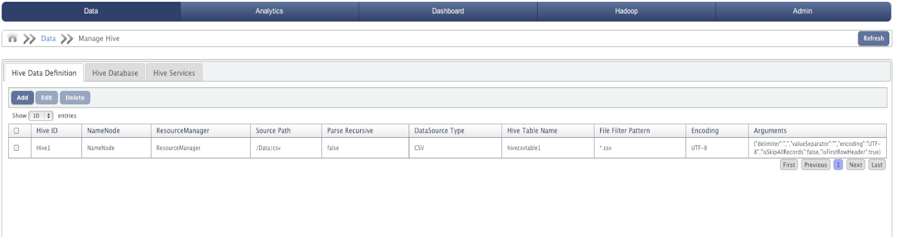
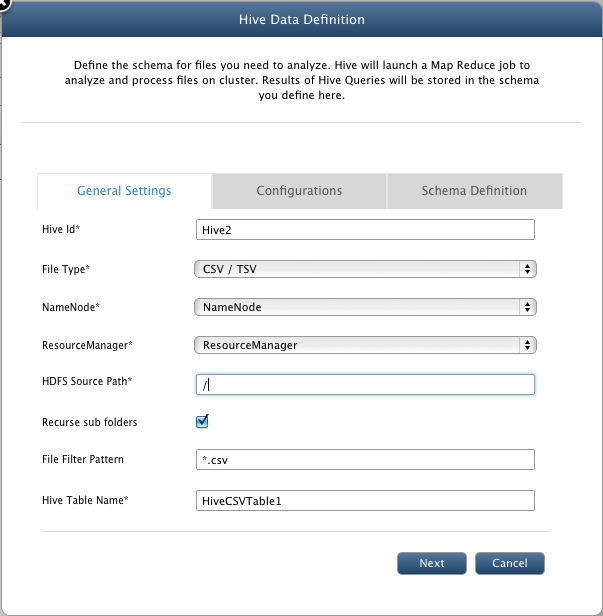
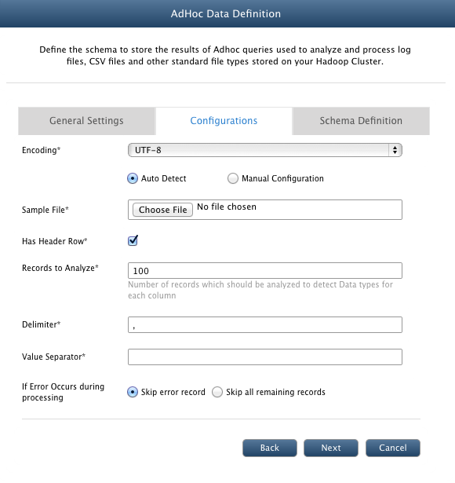
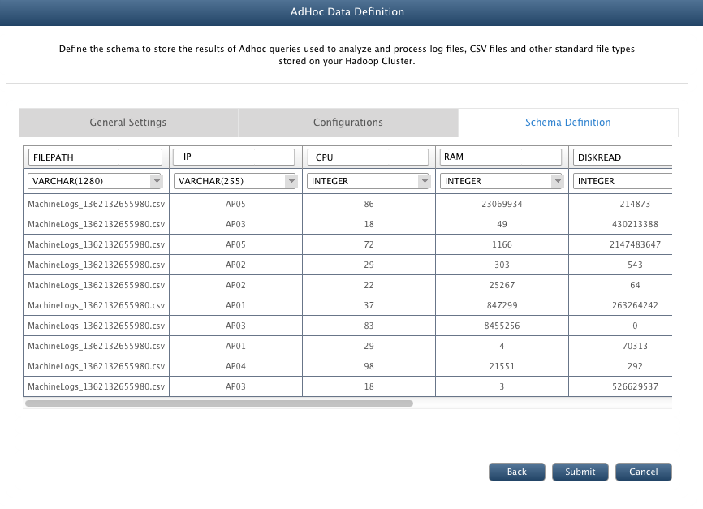
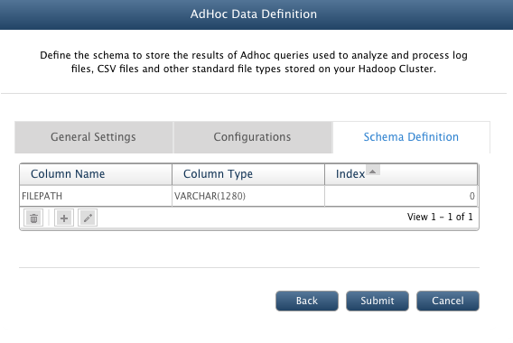

AdHoc Data Definition
In this chapter
This chapter explains about Ad hoc analysis of different file formats.
What is AdHoc Data Definition
QueryIO provides Ad hoc analysis of different file formats like machine generated logs, CSV / TSV, Apache server logs, IIS logs, XML, mbox, key value pairs, JSON, regex patterns etc.
QueryIO AdHoc feature allows you to execute MapReduce jobs for data processing through Query Designer and store parsed data in result table.
QueryIO supports adHoc querying for various file types. You can customize the result table fields, types etc using adHoc data definition feature.
Various supported file type are :
- CSV / TSV
- LOG4J
- Apache Log
- IIS Log
- JSON
- Key / Value Pair
- Mbox
- Regex Parsable Text
- XML
Introduction to Apache Hive
Hive is a data warehouse system for Hadoop that facilitates easy data summarization, ad-hoc queries, and the analysis of large datasets stored in Hadoop compatible file systems.
Hive provides a mechanism to project structure onto this data and query the data using a SQL-like language called HiveQL.
At the same time this language also allows traditional map/reduce programmers to plug in their custom mappers and reducers when it is inconvenient or inefficient to express this logic in HiveQL.
The Apache Hive data warehouse software facilitates querying and managing large datasets residing in distributed storage. Built on top of Apache Hadoop , it provides
-
Tools to enable easy data extract/transform/load (ETL)
-
A mechanism to impose structure on a variety of data formats
-
Access to files stored directly on HDFS
-
Query execution via MapReduce
Hive defines a simple SQL-like query language, called QL, that enables users familiar with SQL to query the data.
At the same time, this language also allows programmers who are familiar with the MapReduce framework to be able to plug in their custom mappers and
reducers to perform more sophisticated analysis that may not be supported by the built-in capabilities of the language.
QL can also be extended with custom scalar functions (UDF's), aggregations (UDAF's), and table functions (UDTF's).
Adhoc Data Definition Details
- AdHoc ID : Unique identifier for adhoc job.
- NameNode : Namespace linked with the job.
- Resource Manager : ResourceManager linked with the adhoc.
- Source Path : Root directory in which files will be parsed.
- Data Source Type : File type selected.
- AdHoc Table Name : Name of the adhoc table to query.
- File Filter Pattern : File pattern used for the adhoc definiton to filter out files.
- Encoding : Selected type of file encoding.
- Arguments : Arguments for adhoc job based on configurations provided to adhoc difinition.

Add new Adhoc Data Definition
To define a new adhoc content processor for a file type, click Add.
General settings
- AdHoc Id : A unique identifier for adhoc job.
- File Type : Select from supported file types.
- NameNode : Select namespace whose data will be parsed.
- ResourceManager : Select ResourceManager to allocate resources for the adhoc job.
- HDFS Source Path : Source path under which files will be parsed.
- File Filter Pattern : File pattern to filter out the files to be parsed. (For example : *.xml will parse only file with extension 'xml')
- AdHoc Table Name : Table name for adhoc query.

Configurations
- FileType : CSV / TSV
- Encoding : Select type of file encoding.
- Auto Detect : Upload a sample file which will be parsed to automatically define schema definition for adhoc query.
- Manual Configuration : It allows you to manually define schema for adhoc query.
- Sample File : Select a sample file to auto detect schema.
- Has Header Row : Whether sample csv file has header row or not.
- Records to Analyze : Number of records which should be analyzed to detect Data types for each column
- Delimiter : Delimiter used to separate out value list.
- Value Separator : Delimiter used in file to separate values.
- If Error Occurs during processing : Action to be taken in case error occurred during parsing of file. Either skip the record or stop parsing.

- FileType : LOG4J, Apache Log
- Log Pattern : Regular expression which defines the logging pattern of selected log file type. QueryIO provides default pattern for all supported log files.
- Encoding : Select type of file encoding.
- Auto Detect : Upload a sample file which will be parsed to automatically define schema definition for adhoc query.
- Manual Configuration : It allows you to manually define schema for adhoc query.
- Sample File : Select a sample file to auto detect schema.
- If Error Occurs during processing : Action to be taken in case error occurred during parsing of file. Either skip the record or stop parsing.
- FileType : IIS Log
- Encoding : Select type of file encoding.
- Auto Detect : Upload a sample file which will be parsed to automatically define schema definition for adhoc query.
- Manual Configuration : It allows you to manually define schema for adhoc query.
- Sample File : Select a sample file to auto detect schema.
- Has Header Row : Whether sample log file has header row or not.
- Records to Analyze : Number of records which should be analyzed to detect Data types for each column
- Delimiter : Delimiter used to separate out value list.
- If Error Occurs during processing : Action to be taken in case error occurred during parsing of file. Either skip the record or stop parsing.
- FileType : JSON
- Encoding : Select type of file encoding.
- Auto Detect : Upload a sample file which will be parsed to automatically define schema definition for adhoc query.
- Manual Configuration : It allows you to manually define schema for adhoc query.
- Sample File : Select a sample file to auto detect schema.
- Records to Analyze : Number of records which should be analyzed to detect Data types for each column
- If Error Occurs during processing : Action to be taken in case error occurred during parsing of file. Either skip the record or stop parsing.
- FileType : Key / Value Pair
- Encoding : Select type of file encoding.
- Auto Detect : Upload a sample file which will be parsed to automatically define schema definition for adhoc query.
- Manual Configuration : It allows you to manually define schema for adhoc query.
- Sample File : Select a sample file to auto detect schema.
- Delimiter : Delimiter used to separate out value list.
- Value Separator : Separator used between key and value.
- If Error Occurs during processing : Action to be taken in case error occurred during parsing of file. Either skip the record or stop parsing.
- FileType : MBox
- Encoding : Select type of file encoding.
- Auto Detect : Upload a sample file which will be parsed to automatically define schema definition for adhoc query.
- Manual Configuration : It allows you to manually define schema for adhoc query.
- Sample File : Select a sample file to auto detect schema.
- If Error Occurs during processing : Action to be taken in case error occurred during parsing of file. Either skip the record or stop parsing.
- FileType : Regex Parsable Text
- Encoding : Select type of file encoding.
- Auto Detect : Upload a sample file which will be parsed to automatically define schema definition for adhoc query.
- Manual Configuration : It allows you to manually define schema for adhoc query.
- Sample File : Select a sample file to auto detect schema.
- Regular Expression : Regular expression which will be parsed to create schema definition.
- If Error Occurs during processing : Action to be taken in case error occurred during parsing of file. Either skip the record or stop parsing.
- FileType : XML
- Encoding : Select type of file encoding.
- Auto Detect : Upload a sample file which will be parsed to automatically define schema definition for adhoc query.
- Manual Configuration : It allows you to manually define schema for adhoc query.
- Sample File : Select a sample file to auto detect schema.
- XML Node Name : Name of a node in xml file.
- If Error Occurs during processing : Action to be taken in case error occurred during parsing of file. Either skip the record or stop parsing.
Schema Definition
- In case of Auto Detect schema definition :
- This view shows the schema definition that was developed by parsing sample file.
- Check to make sure the data was defined correctly with the sample file.
- You can also update the schema definition by removing any column or changing clumn type etc.

- In case of Manually Configure schema definition :
- You can manually add columns its related details to define schema.
- Provide appropriate details and press <Enter> to add column.

Edit / Delete Adhoc Data Definition
QueryIO allows you to edit general settings of the adhoc definition. Select the adhoc job and click Edit.
To delete it, select the job and click Delete.
Copyright © 2017 QueryIO Corporation. All Rights Reserved.
QueryIO, "Big Data Intelligence" and the QueryIO Logo are trademarks
of QueryIO Corporation. Apache, Hadoop and HDFS are trademarks of The Apache Software Foundation.